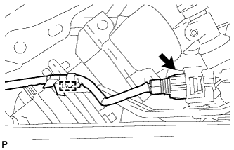
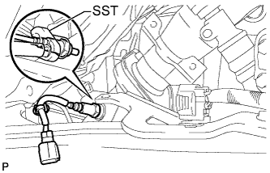
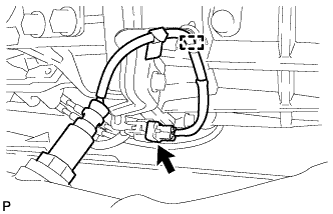
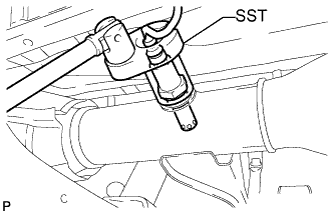

ВЫПУСКНАЯ ТРУБА > СНЯТИЕ |
| 1. СНИМИТЕ ВЫХЛОПНУЮ ТРУБУ В СБОРЕ |
Выверните 2 болта.
Отсоедините выхлопную трубу от центральной выпускной трубы и снимите прокладку.
Снимите выхлопную трубу с опоры.
| 2. СНИМИТЕ ЦЕНТРАЛЬНУЮ ВЫПУСКНУЮ ТРУБУ В СБОРЕ (для 3-дверных моделей) |
Отверните 2 болта.
Отсоедините центральную выпускную трубу от передней трубы и снимите прокладку.
Снимите центральную выпускную трубу с 2 опор трубы.
| 3. СНИМИТЕ ЦЕНТРАЛЬНУЮ ВЫПУСКНУЮ ТРУБУ В СБОРЕ (для 5-дверных моделей) |
Выверните 2 болта и снимите 2 пружины сжатия.
Отсоедините центральную выпускную трубу от передней трубы и снимите прокладку.
Снимите центральную выпускную трубу с 3 опор трубы.
| 4. СНИМИТЕ ДАТЧИК СОСТАВА ТОПЛИВОВОЗДУШНОЙ СМЕСИ |
|  |
Отсоедините разъем датчика состава топливовоздушной смеси.
Освободите зажим жгута проводов.
|  |
С помощью SST снимите датчик состава топливовоздушной смеси.
| 5. СНИМИТЕ ПОДОГРЕВАЕМЫЙ КИСЛОРОДНЫЙ ДАТЧИК |
|  |
Отсоедините разъем подогреваемого кислородного датчика.
Освободите зажим жгута проводов.
|  |
Снимите подогреваемый кислородный датчик с помощью SST.
| 6. СНИМИТЕ ПРИЕМНУЮ ТРУБУ В СБОРЕ |
Выверните 2 болта и снимите 2 пружины сжатия.
Отсоедините приемную трубу от выпускного коллектора и снимите прокладку.
Снимите приемную трубу с опоры трубы.